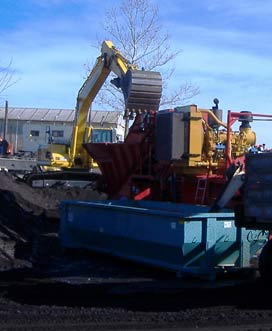

Recycling
Join The West Green Team
The hot mix asphalt industry has been leading the nation’s recycling charge. In fact, RAP – Reclaimed Asphalt Pavement – ranks as America’s most recycled and reused material. Asphalt is 100 percent recyclable, and more than 100 million tons of asphalt pavement are reclaimed every year. To put that in perspective, that’s approximately twice the tonnage of the amount of recycled paper, glass, plastic and aluminum combined! It is America’s most reused and recycled material!
Reclaiming and reusing existing asphalt pavement reduces the amount of virgin asphalt cement needed for the construction of new roadways. Asphalt Pavement is made up of 95% aggregate and 5% asphalt cement. When reclaimed asphalt pavement (removed in most cases from rotomilling machines) is incorporated into new pavement the asphalt cement in the old pavement is reactivated becoming part of the “glue” that holds the new pavement together. Other industries’ waste products such as roofing shingles, rubber, tires, glass, and foundry sand can also be incorporated into asphalt mix designs producing high quality pavements.
Increased use of RAP also reduces the amount of greenhouse gas emissions by eliminating the fuel consumption and emissions produced during the production of new asphalt cement products and delivery of these products by tanker trucks on our roadways throughout the United States. As you can see the recycling effort is a domino effect throughout the industry!
West Contracting has invested heavily in ensuring that we preserve our resources and protect the environment. West Contracting operates two rotomilling machines. These remove existing asphalt pavement from roadways. The asphalt is ground into a small size that then can be used by our asphalt plants to produce recycled pavement products.
We also have incorporated residential roofing shingles into our asphalt mix designs. Residential roof shingles also are partially made of asphalt cement and when ground and heated the asphalt cement can be reactivated and reused in new asphalt pavements.
All three of West Contracting’s Asphalt Plants use RAP as well as RAS (recycled asphalt shingles) in our asphalt mixes, giving our customers a quality product while protecting the environment.
Recycling asphalt pavement and other construction materials makes environmental sense and economic cents. Recycled asphalt pavement reduces the use of virgin materials and preserves landfill space. Taxpayers benefit by stretching tax dollars, and this allows state and local governments to keep more roads in better condition.
Learn more by viewing Recycling Makes Cents For MoDOT.
You can also find out more about the industry’s efforts by reading NAPA’s Sustainability Report – Black and Green: Sustainable Asphalt, Now & Tomorrow.
NAPA also provides an excellent overview on the Benefits of Asphalt.
Did you know . . .
- Unlike asphalt, concrete pavement cannot be reclaimed and reused since the cement binder cannot be re-hydrated after its initial use. Concrete pavement can only be recycled into an aggregate, which is often used as a base under an asphalt overlay.
- Asphalt is by far the most reused and recycled pavement material in America. About 100 million tons of asphalt pavement is reclaimed every year, and more than 95 percent of the reclaimed material is reused or recycled.
- When RAP is reused in asphalt pavements, the asphalt cement is reactivated and becomes part of the binder (or glue) for the new pavement. This reduces the amount of virgin cement that is required.
- Using RAP in the final product of asphalt pavement lessens vulnerability to market fluctuations in crude oil and raw material pricing.
- RAP conserves precious natural resources.
- Asphalt pavement is a permanent resource that will never be consumed and can be reused and recycled indefinitely.
SOURCE: Asphalt Pavement Alliance